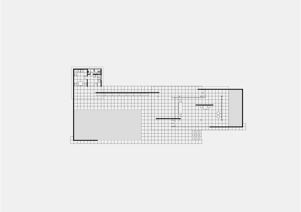
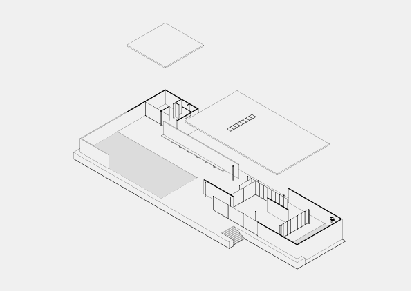
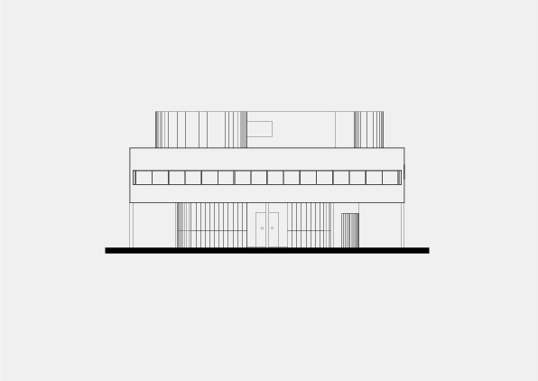
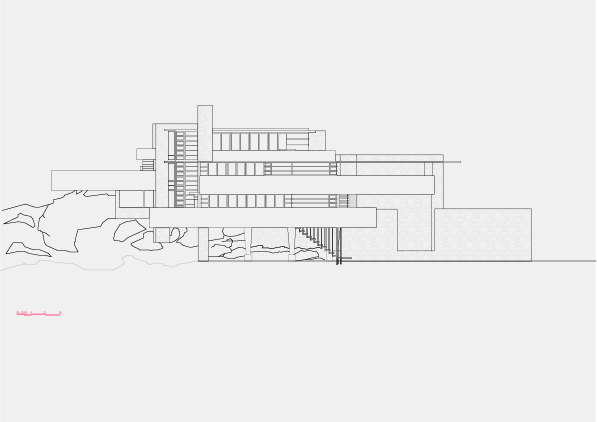

Constructing, Locating, and Experiencing Modernity
Constructing Modernity
The first part of this course investigates how modern architecture was constructed — both literally (through steel, concrete, glass, plastic) and conceptually (through new design approaches and social ideals). Lectures trace key buildings from the Industrial Revolution to the present, examining the material foundations of modernism.
Pre-Industrial Architecture and the Industrial Revolution
These sessions introduce the major architectural styles that preceded the Industrial Revolution in Western Europe, highlighting the transition from tradition-driven design to Enlightenment rationality and setting the stage for the radical changes brought by industrialisation. They then trace the origins of modern architecture from 1850 to 1930: how industrialisation produced new building materials, how concerns for health shaped new forms, and how architects began to reject ornament in favour of a functional, material-based aesthetic. Together, these shifts mark the emergence of modernism as both a social project and a new architectural language.
Steel
These sessions examine steel construction in the twentieth century. They discuss how steel construction enabled open plans, continuous space, and transparent envelopes through Mies van der Rohe’s pursuit of ‘universal space’. They then explore how steel’s standardisation enabled prefabricated housing, from post-war emergency shelter to the Case Study Houses’ aesthetic experiments. Finally, they trace steel’s expressive possibilities, examining how it allowed architects to pursue complex geometries from Fuller’s geodesic domes to contemporary parametric architecture, where digital tools extend steel’s capacity to create expressive and experimental forms.


Reinforced Concrete
These sessions examine reinforced concrete in the twentieth century. They discuss how concrete enabled the formal language of early modernism through Le Corbusier’s Five Points and the International Style’s aesthetics. They then explore Brutalism’s embrace of exposed concrete as honest and socially committed material, from Unité d’Habitation to British housing estates and public buildings. Finally, they introduce students to concrete’s sculptural possibilities, examining how architects treated it as ‘liquid stone’ poured into expressive and experimental shells and curves from Ronchamp to the Sydney Opera House.


Locating Modernity
Over the past two centuries, Western architecture has made universal claims. Modernism promised efficiency, functionality, and universality, relying on now-ubiquitous steel, concrete, and glass. Yet such global ambitions have often overlooked climate, culture, and local knowledge. This course examines the tensions, exchanges, and compromises between the universal and the local in architectural practice, exploring not just forms and materials, but the deeper ethics that shape the spaces we inhabit.
Modern Architecture
This session examines modernism’s claim to universality — the idea that rational design, industrial materials, and functional efficiency could transcend place, climate, and culture.
Vernaculars
This session introduces vernacular architecture as a sophisticated knowledge system shaped by climate, materials, and culture, and its framing by modernist thinkers.
Imports I
This session examines how non-Western architectural forms were ‘imported’ into Europe as exotic fantasies and romantic appropriations.
Exports I
This session examines how Western architectural forms were exported through colonialism as tools of political control and cultural domination.
Exports II
This session continues examining architectural exports, focusing on French colonial urbanism in North Africa and modernist planning in postcolonial contexts.
Imports II
This session explores Critical Regionalism — architects who synthesized modernist techniques with local climate, materials, and cultural practices as resistance to both colonial impositions and the ‘universal’ International Style.
Experiencing Modernity and Its Limits
Modern architecture has assumed unlimited resources. Modernism promised progress through industrial materials and mechanical systems, relying on cheap fossil fuels for construction and operation. Yet such assumptions have proven environmentally and experientially unsustainable. This term examines the environmental and experiential consequences of modern architecture as well as questions alternatives grounded in energy limitation, adaptive comfort, and long-term care.
Energy Limits
This session examines how modernist forms depend on fossil fuel energy for both construction and operation. Students will trace the energy basis of modern materials and the thermal failures of early modernism, how air conditioning enabled the International Style’s sealed towers and deep floor plans, and how this energy-dependent architecture was globalised, creating a new vernacular dependent on assumptions of cheap, endless fossil fuels.
Experiential Limits
Modernism imposed atmospheric limits by controlling and homogenising environmental conditions. This session investigates how mechanical systems created constant temperature, uniform lighting, and acoustic isolation, reducing architecture’s atmospheric richness to visual form. Students will explore alternative practices that design atmosphere, sensation, and environmental variation as primary architectural elements.
Temporal Limits
Buildings exist in time. This session investigates how buildings adapt to new uses, change over their lifespans, decay through weathering and age, and become obsolete.